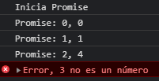

Promises
Si se realiza el proceso de la promesa sin errores se ejecuta el resolve, sino se cumple se ejecuta el reject.
El resolve es la parte positiva de return.
El reject es la parte negativa del return.
Usando:
console.log('--------- 1 ---------');
function cuadradoPromiseV1(value) {
if (typeof value !== 'number') {
return Promise.reject(`Error, ${value} no es un número`);
}
return new Promise((resolve, reject) => {
setTimeout(() => {
resolve({
value,
result: value * value
});
}, Math.random() * 1000)
})
}
cuadradoPromiseV1(0)
.then(obj => {
console.log('Inicia Promise');
console.log(`Promise: ${obj.value}, ${obj.result}`);
return cuadradoPromiseV1(1);
})
.then(obj => {
console.log(`Promise: ${obj.value}, ${obj.result}`);
return cuadradoPromiseV1(2);
})
.then(obj => {
console.log(`Promise: ${obj.value}, ${obj.result}`);
return cuadradoPromiseV1('3');
})
.then(obj => {
console.log(`Promise: ${obj.value}, ${obj.result}`);
return cuadradoPromiseV1(4);
})
.then(obj => {
console.log(`Promise: ${obj.value}, ${obj.result}`);
return cuadradoPromiseV1(5);
})
.then(obj => {
console.log(`Promise: ${obj.value}, ${obj.result}`);
console.log('Fin de la promesa');
})
.catch(error => console.error(error));
